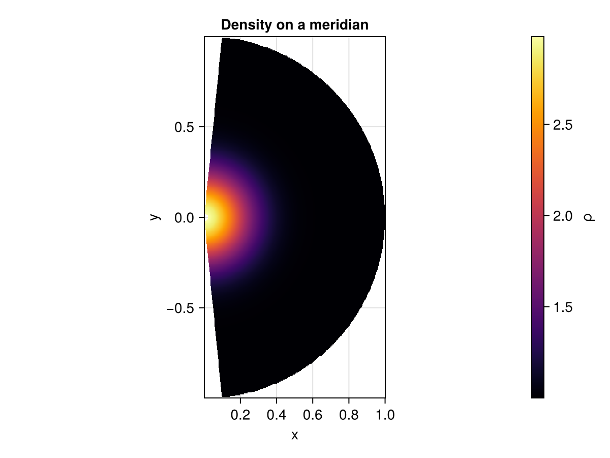
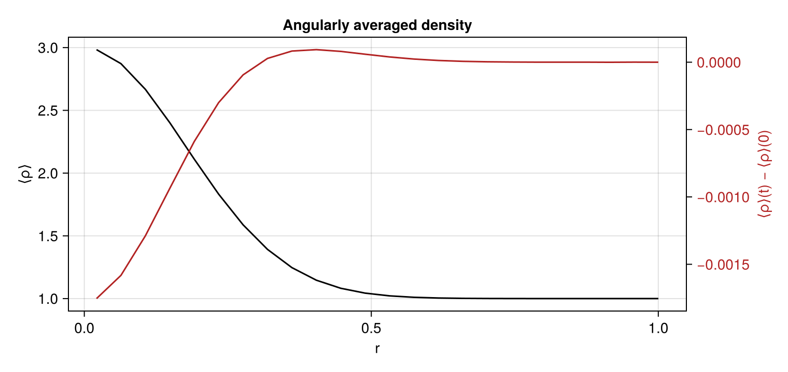

Initialize a resolved spherical domain
Spherical coordinates $(r,\theta,\phi)$ extend the cylindrical construction to two kinds of coordinate singularity: the origin $r=0$ and the polar axis $\theta \in \{0, \pi\}$. As in the preceding tutorials, these are not material walls. CompactLES continues smooth fields through them using an origin fold and two pole folds. This tutorial initializes a resolved spherical domain, advances a smooth blast a short way, and views a meridional slice.
using MPI
MPI.Initialized() || MPI.Init(threadlevel=:funneled)
using CompactLES
using CairoMakie
CairoMakie.activate!(type = "png")Geometry and the two folds
SphericalMetric reads the coordinates as $(r, \theta_{\text{polar}}, \phi)$. Three boundary conditions cooperate to close the singular set:
OriginBCfolds $r=0$ with the antipodal map $(-r,\theta,\phi) \equiv (r, \pi-\theta, \phi+\pi)$; the polar range must be symmetric about $\pi/2$ for it, which spanning the full $(0, \pi)$ satisfies;PoleBCfolds the polar axis and is applied at both ends of $\theta$ over $(0, \pi)$;- the azimuth is periodic over $2\pi$ with an even number of points.
The origin fold is less forgiving than the cylindrical axis: it needs initial data that is smooth and resolved over several cells at the center, and will not accept a feature concentrated at $t=0$ into a single cell. The Gaussian blast below is broad enough to satisfy that.
nr, ntheta, nphi = 24, 16, 12(24, 16, 12)A smooth central blast
The initial condition is a pressure and density bump centered on the origin. It depends on $r$ alone, so it is automatically regular under both folds: nothing in it references $\theta$ or $\phi$, so there is no angular discontinuity to reconcile at the poles or the center.
blast(r) = exp(-(r / 0.25)^2)
problem = Problem(
name = "spherical central blast",
eos = single_species(gamma = 1.4),
metric = SphericalMetric(),
domain = ((0.0, 1.0), (0.0, pi), (0.0, 2pi)),
bcs = ((OriginBC(), SlipWallBC()),
(PoleBC(), PoleBC()),
(PeriodicBC(), PeriodicBC())),
ic = (r, theta, phi) -> begin
b = blast(r)
Prim(p = 1.0 + 2.0b, rho = 1.0 + 2.0b)
end,
)
numerics = Numerics(
n_global = (nr, ntheta, nphi),
art = ArtParams(enabled = true),
cfl = 0.3,
filter_interval = 1,
)
solver, Q = setup(problem, numerics)(Solver(grid=24 × 16 × 12, t=0.0, step=0, cfl=0.3, metric=SphericalMetric), ConservedState{Float64}(32 × 24 × 20 × 5))Record the initial radial profile before advancing, so the change over the run can be plotted against it. line_profile is collective and returns the same vector on every rank, so this is the angular average of the initial blast.
r0, rho0 = line_profile(solver, Q, :rho; dim = 1)([0.02127659574468085, 0.06382978723404255, 0.10638297872340426, 0.14893617021276595, 0.19148936170212766, 0.23404255319148937, 0.276595744680851, 0.3191489361702127, 0.36170212765957444, 0.40425531914893614 … 0.6170212765957447, 0.6595744680851064, 0.7021276595744681, 0.7446808510638298, 0.7872340425531915, 0.8297872340425532, 0.8723404255319149, 0.9148936170212766, 0.9574468085106383, 1.0], [2.9855661431638705, 2.8737828701950154, 2.6687415341198055, 2.402470684385896, 2.112329394720813, 1.8325454311119265, 1.5880542255285284, 1.3919780189867352, 1.2465704103564756, 1.1463710228492685 … 1.0045242796322809, 1.0018970248610934, 1.0007506396675485, 1.0002803011664143, 1.000098776402432, 1.0000328485655723, 1.000010308952065, 1.0000030531457476, 1.0000008533269424, 1.000000225070349])Advance a short interval
The overpressure drives an outward spherical shell. Because the initial data has no angular dependence the evolved state should remain nearly spherically symmetric; departures from that symmetry measure the discretization error of the folds, which is why a resolved spherical case is a demanding test as much as a demonstration.
run!(solver, Q; tfinal = 0.06, nmax = 20);View a meridional slice
A slice at fixed azimuth (normal = 3) is an $(r,\theta)$ half-plane — a meridian. fieldheatmap maps it to Cartesian $(x, y) = (r\sin\theta, r\cos\theta)$ and draws it with an equal aspect, so the polar axis runs vertically and the profile appears as concentric arcs of the expanding shell.
fig, ax, plt = fieldheatmap(solver, Q, :rho; normal = 3, index = 1,
axis = (; title = "Density on a meridian"),
colormap = :inferno)
fig
The radial profile, averaged over the resolved angles, is the one-dimensional view of the same shell. Comparing it against a collapsed $(N_r, 1, 1)$ radial run — as in the spherical Sedov case of test/runtests.jl — is how the resolved folds are checked against the axisymmetric reference.
A second axis overlaid on the same grid shows the change relative to the initial state, $\langle\rho\rangle(r, t) - \langle\rho\rangle(r, 0)$. Both profiles are sampled on the same radial grid, so the difference is taken pointwise. The twin axis shares the $r$ position but carries its own right-hand scale, mirrored and colored to match its curve; hiding its grid and duplicate $r$ decorations keeps the shared axis readable.
r, rho_of_r = line_profile(solver, Q, :rho; dim = 1)
linefig = Figure(size = (760, 360))
lineax = Axis(linefig[1, 1], xlabel = "r", ylabel = "⟨ρ⟩",
title = "Angularly averaged density")
change_color = :firebrick
changeax = Axis(linefig[1, 1], yaxisposition = :right,
ylabel = "⟨ρ⟩(t) − ⟨ρ⟩(0)", ylabelcolor = change_color,
yticklabelcolor = change_color, ygridvisible = false,
xgridvisible = false)
hidespines!(changeax)
hidexdecorations!(changeax)
linkxaxes!(lineax, changeax)
lines!(lineax, r, rho_of_r, color = :black, label = "⟨ρ⟩")
lines!(changeax, r, rho_of_r .- rho0, color = change_color, label = "change")
linefig
This page was generated using Literate.jl.